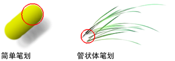

在显示“Paint Effects”画布时，将自动选择“Paint Effects 工具”(Paint Effects Tool)。光标将显示笔划路径的宽度。对于简单的笔划，笔刷宽度定义绘制图章。对于具有管状体的笔划，笔刷宽度定义笔划路径边界 — 管状体只能在笔刷宽度定义的路径内开始增长。

在画布上绘制笔刷笔划
- 设置画布（如有必要）。有关信息，请参见设置画布。
- 执行下列操作之一：
- 如果使用光笔和绘图板，则根据需要修改压力映射（“生成 > Paint Effects 工具”(Generate > Paint Effects Tool) >
 ）。最多可以将三个笔刷属性映射到光笔压力。有关修改光笔压力映射的信息，请参见设置为在 3D 中绘制中的使笔刷响应光笔压力。
）。最多可以将三个笔刷属性映射到光笔压力。有关修改光笔压力映射的信息，请参见设置为在 3D 中绘制中的使笔刷响应光笔压力。
- 如果要忽略压力映射，则将“压力贴图”(Pressure map)值设置为禁用，或者在“Paint Effects”面板菜单栏中，选择。如果您使用鼠标而非光笔进行绘制，则可能希望忽略压力映射。
- 如果使用光笔和绘图板，则根据需要修改压力映射（“生成 > Paint Effects 工具”(Generate > Paint Effects Tool) >
- 在“内容浏览器”(Content Browser)（）中或工具架上，单击绘制时要使用的笔刷预设。选定的笔刷设置将复制到模板笔刷。
如果未选择预设笔刷，则您绘制的下一个笔划将使用模板笔刷的当前设置。
- 如果要设置笔刷类型、绘制颜色（着色）或其他笔刷属性，请修改模板笔刷设置（）。有关详细信息，请参见 Paint Effects 笔刷设置。
提示： 只能在画布上使用热键以交互方式更改“全局比例”(Global Scale)（笔刷工具下的“ModifyUpperRadius”，默认热键为 b）和“笔刷宽度”(Brush Width)（“热键编辑器”(Hotkey editor)中的笔刷工具下的“ModifyLowerRadius”，默认热键为 B）。可以在“Paint Effects 笔刷设置”(Paint Effects Brush Settings)窗口中查找“全局比例”(Global Scale)和“笔刷宽度”(Brush Width)设置（Paint Effects 面板菜单栏的）。有关其他 Paint Effects 热键的信息，请参见准备使用 Paint Effects 主题中的使用默认 Paint Effects 热键。
- 如果要绘制无缝重复纹理，请设定适当的“折回”(Wrap)和“侧滚”(Roll)选项。有关折回纹理的信息，请参见创建无缝重复纹理。
- 在画布上拖动。
撤消最后一个笔划
- 选择。
只能撤消一级 — 只能撤消最后一个笔划。
提示： 可以定义热键来撤消最后一个笔划（在“热键编辑器”(Hotkey editor)中的“Paint Effects”下，定义 UndoCanvas）。有关其他 Paint Effects 热键的信息，请参见准备使用 Paint Effects 主题中的使用默认 Paint Effects 热键。